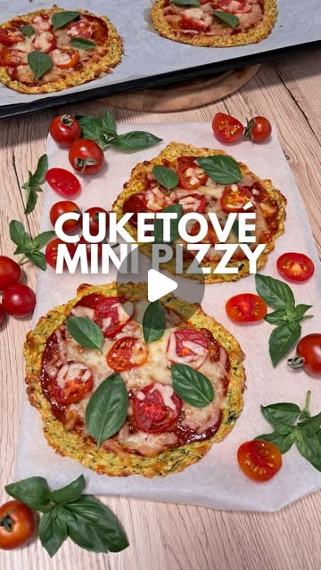

← všetky recepty
🍕 Cuketové mini pizze
Instagram · @fit.foodie.diaries·pridané zo Signalu 18. 9. 2026
hlavné jedlovegetariánskebez lepkuz rúry

Ľahká a fit verzia pizze — korpus z nastrúhanej cukety, ovsených vločiek a tvarohu. Topping si každý zvolí podľa seba.
⏱️ Celkovo: ~45 min (pečenie 25 + 10 min)🔥 Rúra: 180 °C💪 Bielkoviny: tvaroh, vajce, mozzarella
Suroviny
Postup
- Cuketu najemno nastrúhaj a poriadne z nej vytlač prebytočnú vodu.
- Zmiešaj ju s ovsenými vločkami, tvarohom, vajcom, mozzarellou a korením.
- Zmes rozprestri na plech s papierom na pečenie — jedna veľká pizza alebo niekoľko menších mini pízz.
- Peč na 180 °C približne 20–25 minút.
- Potri rajčinovou passatou, pridaj rajčiny a zvyšok mozzarelly.
- Dopeč ďalších 8–10 minút.
💡 Topping si zvoľ úplne podľa seba — šunka, zelenina, šampiňóny alebo čokoľvek, čo máte radi.
▶️ Pozrieť video
Zdroj: Instagram reel — @fit.foodie.diaries (spracované z popisku; ilustračný obrázok)